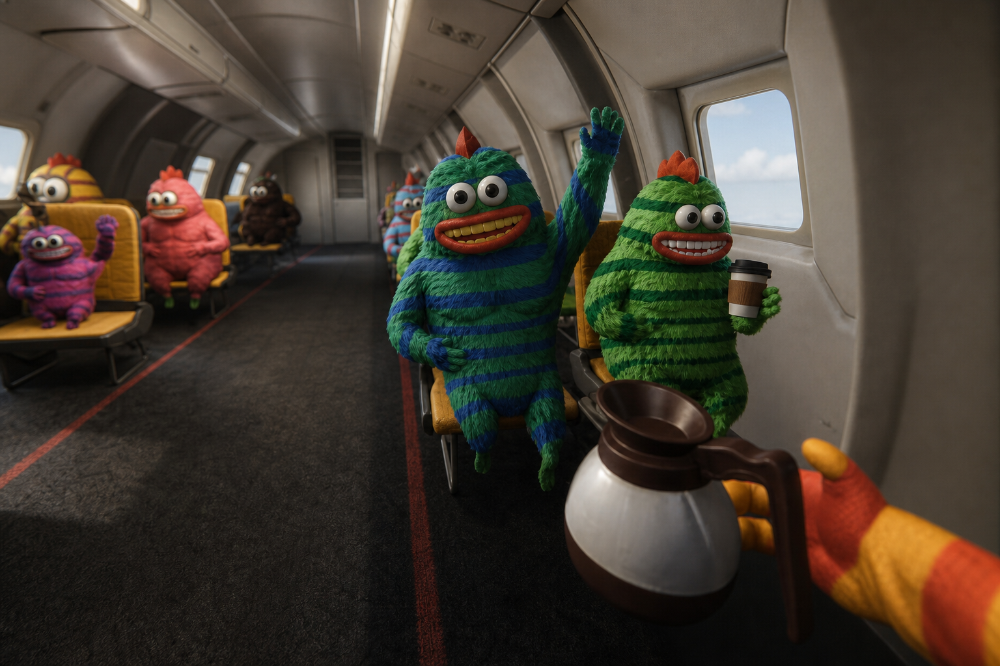
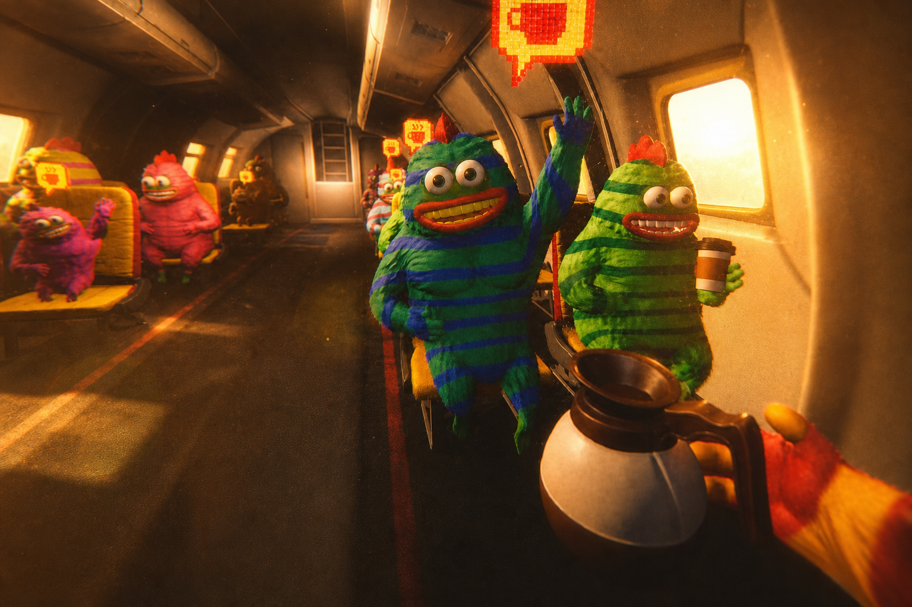
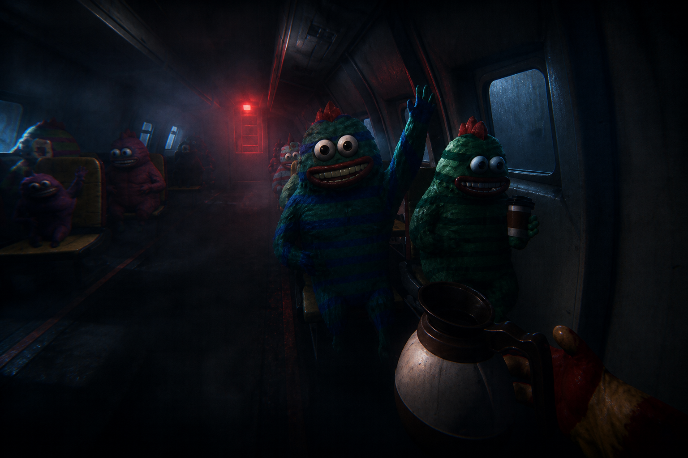
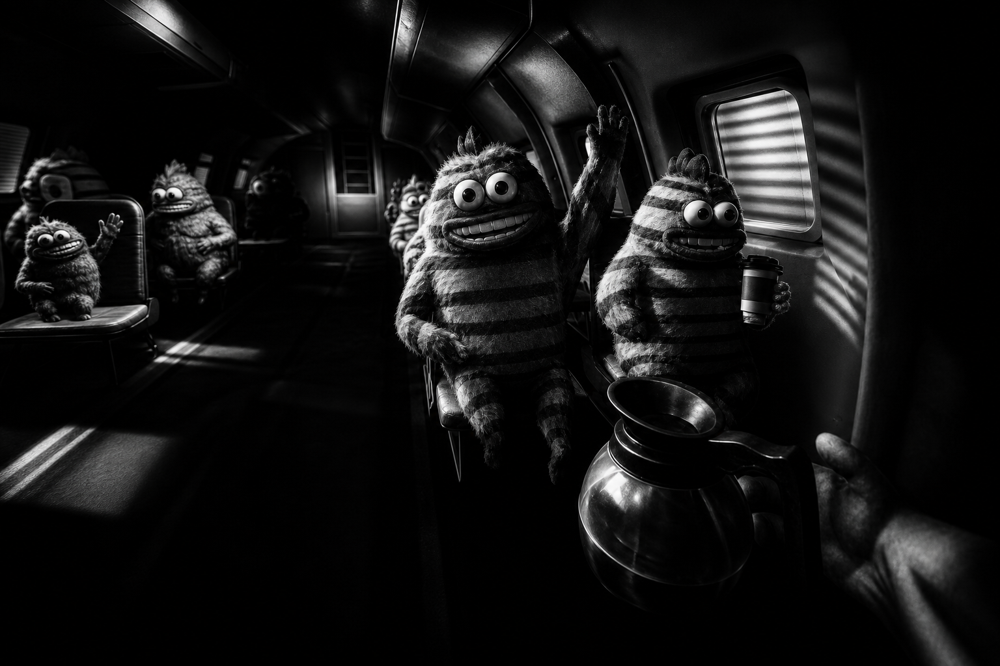
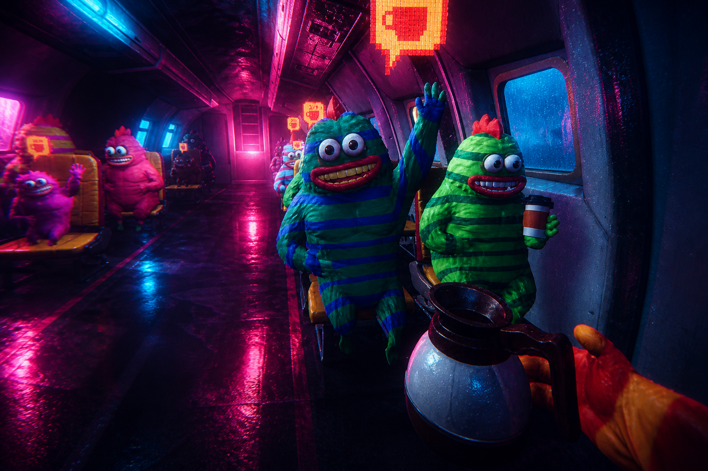
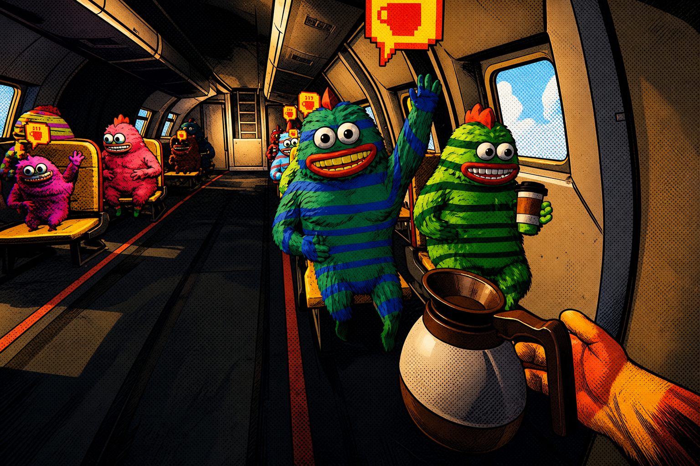
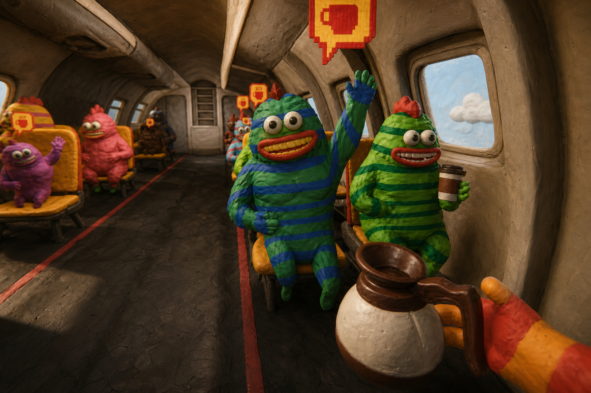
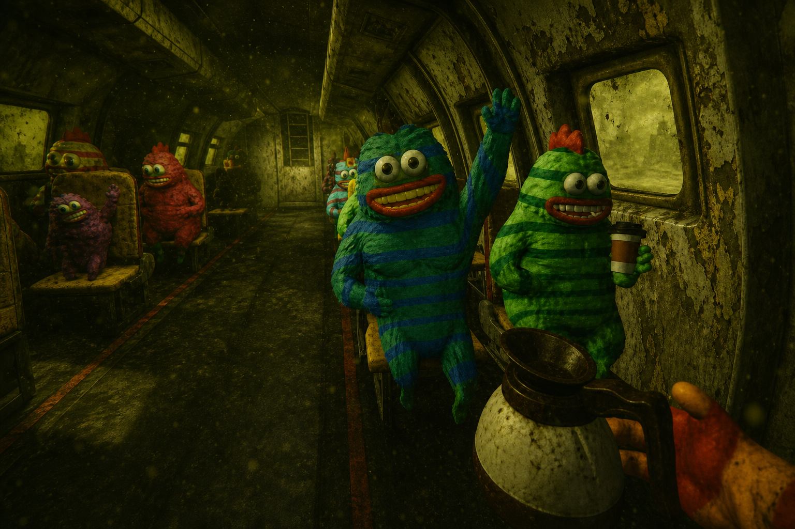
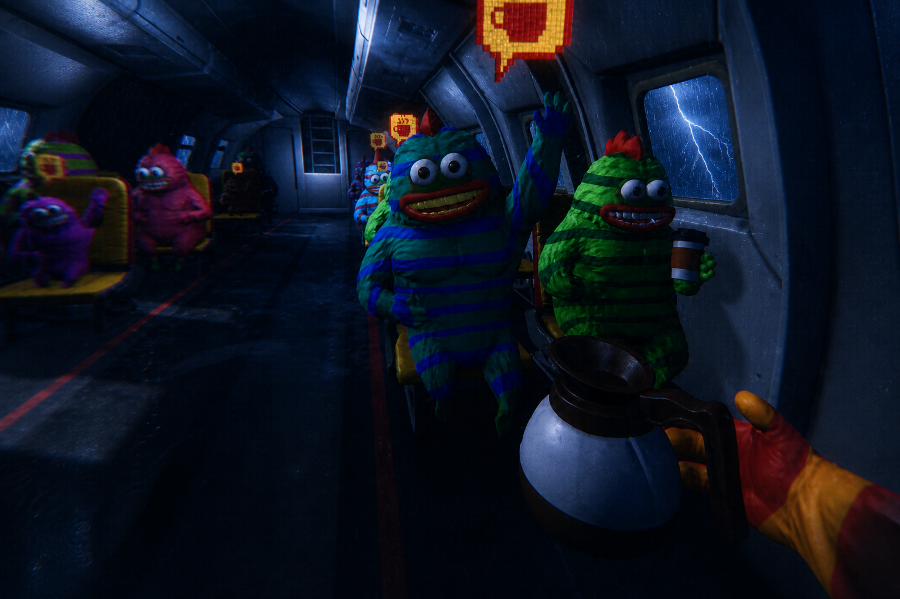
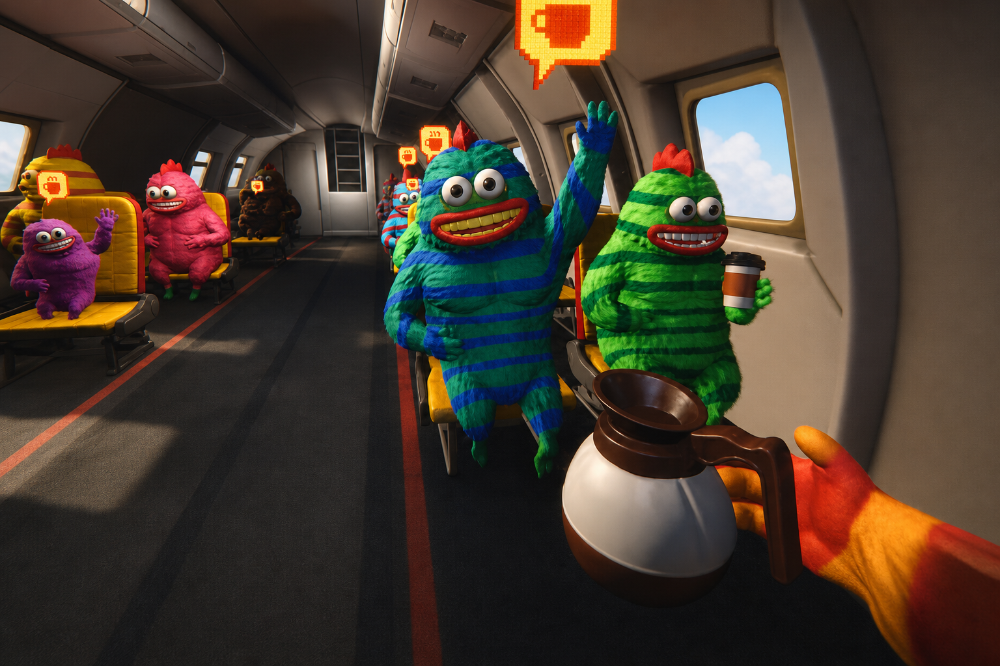

Lavada
de cara.
Tres semanas para dar vuelta el juego y llegar a Gamescom con algo que un publisher quiera financiar. La última bala — y esta vez apuntada bien.
La apuesta
Por qué vale la penaLe pusimos plata y meses a esto y la recepción fue floja. La reacción no es abandonarlo — es gastar la última bala mejorándolo mucho en 20 días y llevarlo a Gamescom a buscar un publisher que lo termine y lo publique. El mercado ya está validado: Dear Passengers hizo 2 millones de wishlists en días. Nosotros no necesitamos toda esa demanda; con una parte alcanza.
La ventaja que ellos no tienen
Dear Passengers tiene 2 millones de wishlists y ningún juego jugable — fecha TBA, solo un trailer. Nosotros tenemos un juego que corre y se puede jugar en vivo. Ese es todo el pitch: sentar al publisher a jugarlo.
Lo que pedimos es plata para terminarlo y publicarlo, no que crean en una promesa.
Precedente que nos banca: Stumble Guys salió un año después de Fall Guys y generó más plata que Fall Guys. Llegar segundos a un mercado abierto no es una condena — es una oportunidad, si el producto está a la altura.
El diagnóstico honesto
Qué está mal hoyAntes de decidir qué mejorar, lo que la reunión puso sobre la mesa sin anestesia:
No hay objetivo ni game over. No hay diferencia real entre jugar solo o acompañado, ni razón para hacer nada. Regla nueva: si tardás más de 20 segundos en explicar de qué se trata, hay un problema — y hoy lo hay.
La muerte no pesa. Morís y reapareces a los 2 segundos. Sin consecuencia, no hay tensión.
Personajes sin carisma ni expresión. Casi siempre con la cara neutra por defecto del rig — parecen "cero inteligentes", el jugador los ignora. Todos iguales, "culones", cuello rígido.
Estética incoherente. Piezas low-poly / Counter-Strike sueltas que no pegan con el resto. La cabina "está muy fulera, estética off de guerra". El "café" no tiene consecuencia.
Somos "copia peor" y el nombre choca. Hoy leemos como Dear Passengers pero peor; encima hay un "Banana Airways" en Roblox de hace 2 años y ~4 juegos de aviones parecidos. Desmarcarse es prioridad.
Cómo trabajamos esto
MétodoDirección creativa temporal
- El trío Jorge · Fernando · Federico toma la dirección creativa por este período para poder implementar ideas nuevas — lo acordado es "córrete, dirigimos nosotros por un tiempo".
- Definimos entre nosotros una lista priorizada de cambios y se la bajamos al equipo de desarrollo para ejecutar y probar algo distinto.
Las ideas valen aunque no se programen
- Mucho de esto se vende con trailer, póster e imágenes ante el publisher, sin necesidad de que esté en el gameplay. "Las ideas tienen su peso, no solo ser implementadas."
- Nos protege del "embudo": no casarnos con 20 mecánicas y morir intentando codearlas todas en 3 semanas. Contamos la visión; implementamos lo que mueve la aguja.
Frentes de mejora
De la reunión al juegoTodo lo que salió, ordenado por sistema. Decidido es rumbo tomado · Explorar es idea fuerte a validar · Prioridad es lo que primero mueve la aguja.
Objetivo & game loop
Prioridad- Indicadores de éxito/fracaso visibles: contador de plata + límite de tiempo. Fórmula: mezcla de tiempo y plata — llegar a destino en el tiempo estipulado juntando un mínimo de guita.
- Récords / leaderboard como consecuencia de esa fórmula.
- Despegue colaborativo: uno pilotea, el resto se sienta y se abrocha para poder despegar. Al despegar cambia el contador de plata (feedback claro).
- Rondas/oleadas con dificultad creciente al estilo REPO. "Buscá un formato que ya funcione y aplicalo", no inventes uno nuevo.
Muerte & pasajeros
Explorar- Que la muerte pese. Al morir te quedás como pasajero — espectador activo: molestás, vomitás, tomás café, saboteás al resto, podés cambiar de pasajero. Mantiene la sesión viva.
- Variedad y personalización real: cuerpos, ropa, edades. Hoy son todos iguales.
- Eventos de caos: vómitos (piso resbaloso), pasajeros que se drogan y flotan/alucinan, bebés que se pierden, peleas, el "loco de la bomba" (con tono gracioso).
- Mecánica tipo Gremlins: son pollos modificados genéticamente — si no los alimentás cada ~15s se vuelven agresivos, se comen el asiento y el avión. Alimentarlos o sedarlos los calma.
Kits & consecuencias
Explorar- Kits de emergencia con líquido "fluo": se lo inyectás a los que vomitan o enloquecen para estabilizarlos.
- El propio jugador es de la misma raza: mantené su estabilidad (comer / inyectarse) o se descontrola.
- Reemplazar/complementar el "dar café" (hoy sin consecuencia) por comida o inyecciones con efecto real.
Física & sensación
Explorar- Rotura orgánica del avión y la turbina — menos "cuadradita/trucha".
- Fuselaje roto: succión, viento, papeles volando, arrastre, pasajeros agarrándose, un bebé que casi vuela. Hoy "no se siente que se rompió el avión".
- Corregir escala de props (objetos gigantes que no sirven).
Bodega
Explorar- Eventos propios: un ataúd con un Drácula que despierta — hay que encontrar el hacha y matarlo.
- Bananas rellenas de cocaína (si las rompés te drogás), o bananas para alimentar a las criaturas y que no se broten.
- Carga peligrosa / perros en jaulas que no te muerdan.
Mapa · UI · luz · sonido
Explorar- Mapa vivo que responde al vuelo en tiempo real; zonas peligrosas con ícono (ej. nuclear que se expande) que hay que esquivar. Evaluar un mapa por jugador.
- UI más clean: nombres de jugadores, contador monetario, look pro (referencia REPO).
- Luces dinámicas animadas en emergencias / momentos de terror; poder ir a cabina y controlar la música.
Dirección creativa & tono
La identidadEl giro de tono es lo que nos separa de la competencia y le da coartada al caos. No terror porque sí (como el trailer anterior), sino terror justificado: reactores nucleares y criaturas modificadas genéticamente que explican por qué "de golpe se va todo a la mierda".
☀️ Base: inocente y limpia
Look clean, amable, legible — la puerta de entrada. Los chicos no juegan hardcore puro; juegan cosas "inocentonas". Ese es el piso sobre el que construimos.
🩸 Picos: que dé miedo
"Que sea más clean, más bueno, pero que de golpe se vaya a la mierda de vez en cuando." Zona nuclear tipo Chernobyl, Triángulo de las Bermudas (fantasmal, no zombie). Referencia tonal: The Amazing Digital Circus.
Personajes: el punto más insistido
Rig facial expresivo, estilo stop-motion. Hoy la cara neutra por defecto los mata. Bocas y expresiones bien extremas — risa, enojo, pánico — con "flash". Hacerlos interesantes de mirar.
Los "pollitos" quedan en revisión. Son fáciles de dibujar y meme-ables, pero les falta carisma. Hay exploraciones descartadas que gustaban más — los de labios inflados, los gatitos calvos, los narigones — que son referencia viva para reexplorar. Sin decidir rehacerlos todavía.


El cast actual "pollito". Reabrimos expresividad y variedad; el logo también está en replanteo (el actual quedó "conservador, tipo American Airlines").
Exploración estética — cabina
10 direcciones
Misma cabina, mismos personajes — solo cambiamos luz, tono y textura para ver qué dirección la levanta.
Se genera con la API de imágenes de OpenAI (gpt-image-1, modo edición: mantiene la escena y cambia el mood).
Técnica que propuso Federico: partir de un frame real y reilustrarlo, sin remodelar nada, para el pitch.
10 looks generados con gpt-image-2 (edición image-to-image) desde un frame real de cabina —
misma escena, mismos personajes, solo cambia la luz y el mood. Clic para ver en grande.










Base: frame real del build (POV con la cafetera). Próximo paso: elegir 1–2 direcciones y llevarlas a un test de arte real, no solo reilustrado.
Diferenciación & pitch de Gamescom
Cómo lo vendemosCómo nos separamos de Dear Passengers
- La versión hardcore. "Dear Passengers quedaría medio soft al lado de este." Terror y caos de verdad.
- Núcleo distinto + historia: pollos modificados que se descontrolan, reactores nucleares que activan "lo que tienen adentro". Ahí empieza a separarse.
- Personajes con más carisma y variedad que la competencia.
- Posible cambio de nombre — genérico y choca con el Roblox. En evaluación.
Qué llevamos a Colonia
- No la demo actual. Una versión mejorada: look clean, luces bien, nombres de jugadores, UI arreglada.
- El juego jugable en vivo — sentar al publisher a jugarlo es el pitch.
- Trailer + póster + imágenes para todo lo que no llegue a programarse pero valga contar.
- El speech: mercado ya validado (2M de wishlists), nosotros tenemos el producto, falta plata para terminarlo.
Reunión 2 — avances
SeguimientoTodo lo de arriba es la Reunión 1 (la base). Esto es lo nuevo de la segunda, aparte para no mezclar. Fue de menor señal — buena parte sirvió para poner a Fernando al día ("la 1 arrancó desde la catástrofe, no desde jugar") — pero hubo progreso real.
Se definió (lo que estaba abierto en R1)
🎯 Objetivo del juego
- Llegar al destino con la mayor cantidad de pasajeros vivos y en el menor tiempo.
- Nueva condición de derrota: si la tripulación supera en número a los pasajeros, perdés.
🐔 Los pollitos — cerrado
- Es un mundo de pollos, no hay humanos abajo. La historia nuclear (mutación/reemplazo) lo justifica.
- Deja de ser "porque Valen lo decidió" y pasa a tener lore.
🩸 Tono
- El twist oscuro/terror es ocasional (al cruzar zonas nucleares), no permanente. Confirmado.
- Les gustó el momento de luz que ya hizo Valen.
🖥️ UI
- Se descartó el cartel/lucecita sobre el asiento → se mantiene el globito cerca del personaje, UI liviana / de descubrimiento.
- Solo un momento breve de "qué está pasando" durante el evento radioactivo.
Ideas nuevas
💥 Exploding chickens
- Si no los alimentás al cruzar la zona nuclear, en vez de comerse los asientos explotan y abren agujeros en las paredes. Peligro real, no solo pérdida de puntos.
🍔 Comida asquerosa + inyección
- Comen muchísimo (un pollo entero, no un cafecito) y piden inyección (antídoto de radiación) además de comida.
🧲 Caos ambiental
- Durante la zona radioactiva, que el avión mismo se vuelva loco (magnético/ambiental), no solo los personajes.
🧬 Mutación / doble
- Cuando muere un pasajero, que crezca otro para recuperar la pérdida.
🦛 Criatura gigante
- Un pasajero se transforma en un bicho enorme dentro del avión que te quiere matar → terror y vulnerabilidad. "Eso Dear Passengers no lo tiene."
🚪 Estructura tipo REPO
- Partes del avión que se desbloquean con puertas al progresar. Más escenas tiktokeables para el trailer (caer al mar con chaleco, etc.).
Pitch afilado & reparto
🎤 El ángulo
- Sentarse frente a 20–30 publishers, mostrar el trailer viejo y decir: "nos dimos cuenta de que esto no funcionaba y empezamos a hacer esto otro".
- Posicionamiento: "el juego de 2M de wishlists necesita una competencia — somos nosotros". Interno: "Passengers versión zombie".
📦 Reparto de trabajo
- Deck de 10 páginas (wishlists, Discord, budget, burn mensual) → lo arma Jorge con Ger/patapim.
- El trío se concentra en atacar el juego, no los entregables. El "gameplay-first trailer" ya está casi cubierto.
Tareas de esta reunión
Jorge
- Pitch deck (con Ger/patapim), lista de acciones para devs (incluye ajuste de párpados con supervisión de Fer), y seleccionar props ya hechos que nunca se usaron.
Fernando
- Poses/animaciones faciales de referencia (párpados, pupila "Xenón", ojos desorbitados) con el rig actual para que los devs copien. Activar algo ya. Ver blends de complexión con el rigger.
Federico
- Notas y decisiones, link de inspiración, registrar la idea de mutación / criatura gigante.
Devs
- Props vía Tripo, ajustes de párpados/expresión. Nota técnica: la boca usa spline en vez de huesos → por eso no hay poses faciales todavía.
⚠️ El miedo central — sin resolver
El punto más importante que quedó abierto, en palabras de Jorge:
"Mi miedo con todo este proceso es que hagamos grandes cosas y el juego no cambie… vamos a ir con el trailer y decirle 'empezamos a hacer esto otro', y esa otra cosa todavía mucho no aparece."
Traducido: mucho trabajo periférico (props, caras, trailer) puede no mover el core lo suficiente para venderlo. El diferencial real todavía no está sobre la mesa. Es lo que hay que atacar primero.
También sin cerrar: cuánto cambiar sin perder la esencia de "avión" (se descartó nave espacial); si los personajes son la verdadera debilidad o es algo estructural; condiciones exactas de victoria; factibilidad técnica de la boca (spline) y los blends. El nombre no se tocó en esta reunión — sigue pendiente de R1.
Próximos pasos
~23 díasLista priorizada de cambios Jorge
Bajar el transcript, sumar notas manuales y armar la lista priorizada (cambios, personajes, UI, branding, posible nombre).
Reunión 2 — seguimiento Trío
Ya ocurrió. Definió objetivo, cerró los pollitos, sumó ideas nuevas. Ver avances de la Reunión 2 →
Bajar el listado al equipo Trío → Dev
Comunicar las prioridades al equipo de desarrollo para implementar y probar los enfoques nuevos.
Ejecutar la lavada + material de pitch Todos
Mejoras de alto impacto en el juego + trailer/póster/imágenes de las direcciones que se venden aunque no se programen.
Gamescom — buscar publisher Jorge + Germán
Llevar la versión mejorada a Colonia. Sentar publishers a jugarlo. Cerrar financiamiento.
Sin decidir
Lo que queda abiertoPara no fingir que está todo resuelto — esto es lo que la reunión dejó en el aire:
Dirección post-financiamiento. ¿Seguimos dirigiendo nosotros o vuelve a Valen? Depende del deal.
AbiertoLa cabina. Jorge la odia ("fulera"); Fer y Fede la encuentran graciosa. Sin resolver.
AbiertoCambio de nombre. Consenso de que "puede ser buena idea", pero no decidido.
AbiertoPrecisión del objetivo. ¿Tiempo, plata, o plata como resultado? Convergemos en "mezcla" — falta afinar.
AbiertoLos pollitos. ¿Se rehacen hacia los diseños con más carisma o se quedan por ser fáciles/meme-ables?
AbiertoQué se implementa vs qué se cuenta. La selección final para esquivar el "embudo" queda para la próxima.
Abierto